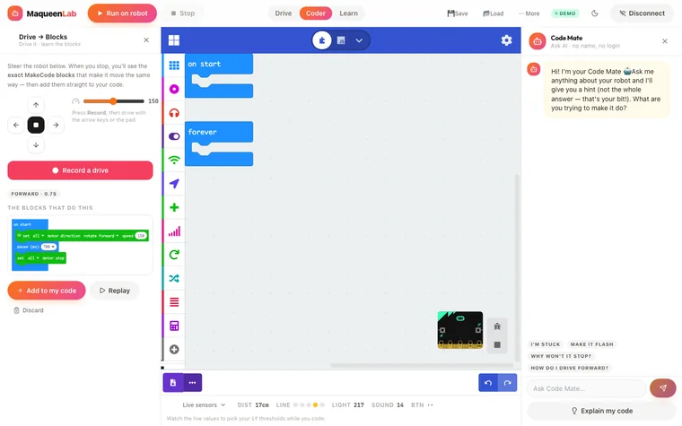
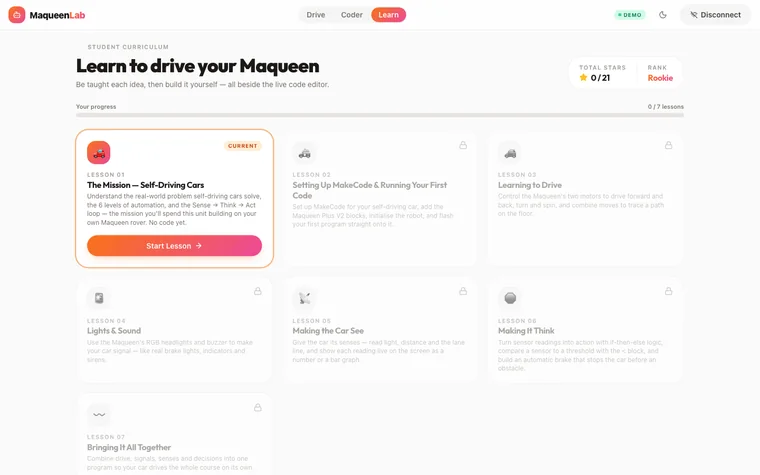
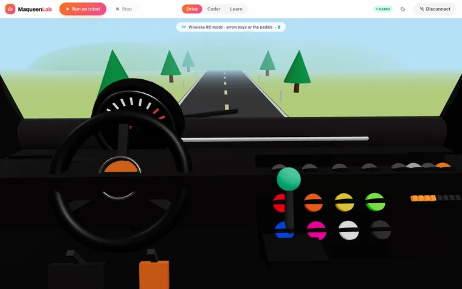
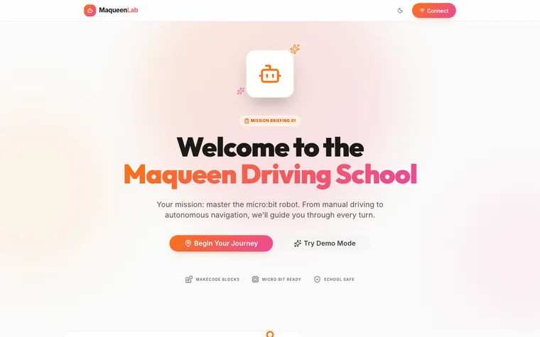

← All projects
MaqueenLab
A robot-car coding course for Years 7 and 8, with an AI helper that gives hints rather than answers.
No sign-in. Made-up data and sample AI responses. Opens in a new tab.
Designed and built independently, outside my school roles. Demonstrations use made-up data and sample AI responses.


The classroom problem
When thirty students are coding robots in pairs, one teacher can't reach every pair that is stuck, and students who fall behind early often stop trying.
What it does
- Seven lessons that unlock in order, building towards a self-driving car.
- Drive the robot by remote control or from a 3D driver's-seat view.
- Record a drive and see the matching code blocks, connecting what the robot did to the code that makes it happen.
- Live sensor readings, and a demo mode for when no robot is available.
Where AI fits
Code Mate gives a short hint and a guiding question, never the full answer. The teacher can switch it off, and it has a daily usage limit to control cost. In the demonstration version its replies are pre-written.
A closer look
Select a screenshot to see it in a larger view.





